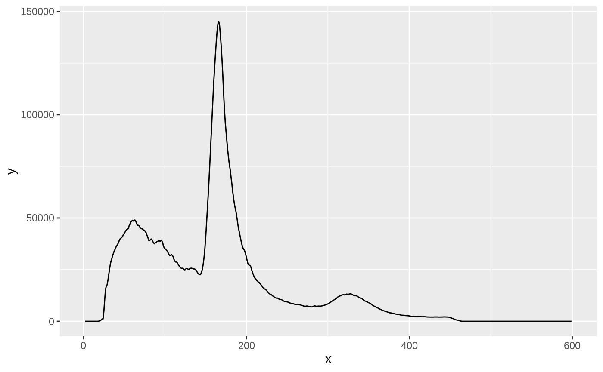
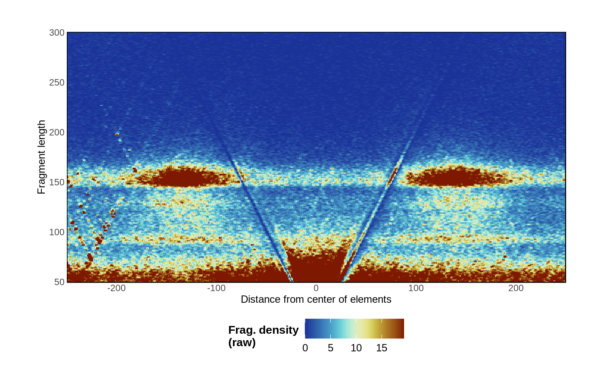
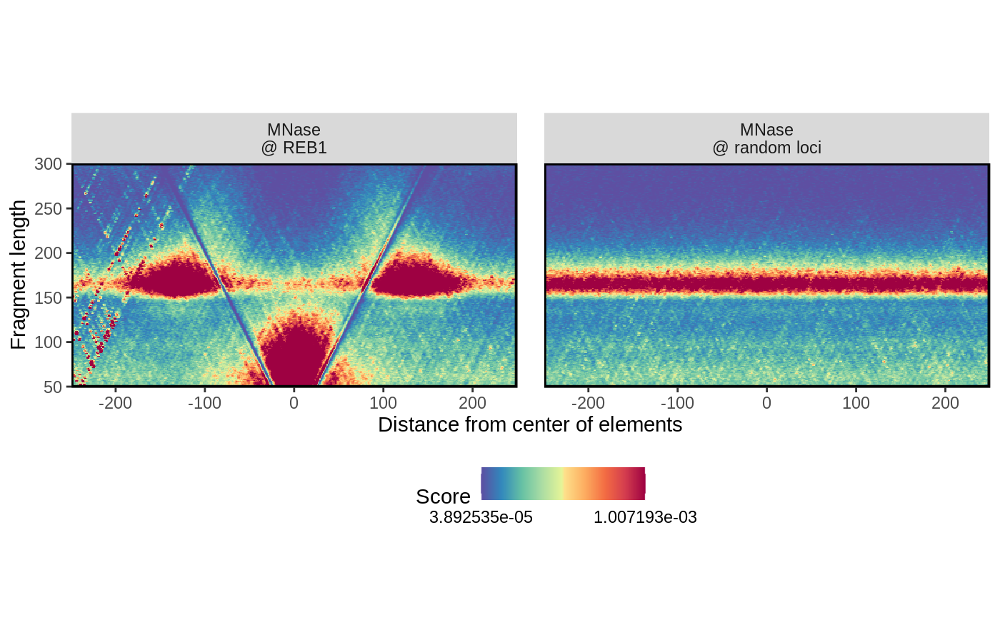
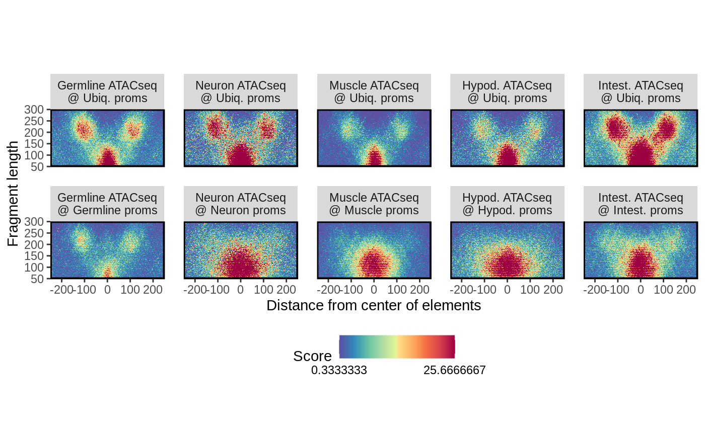
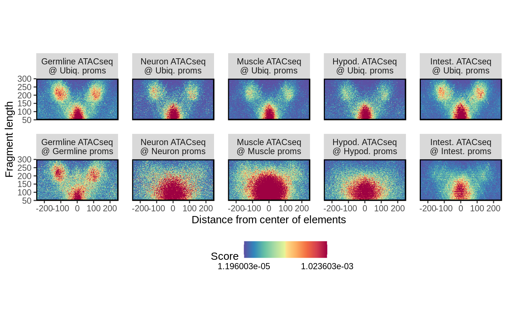
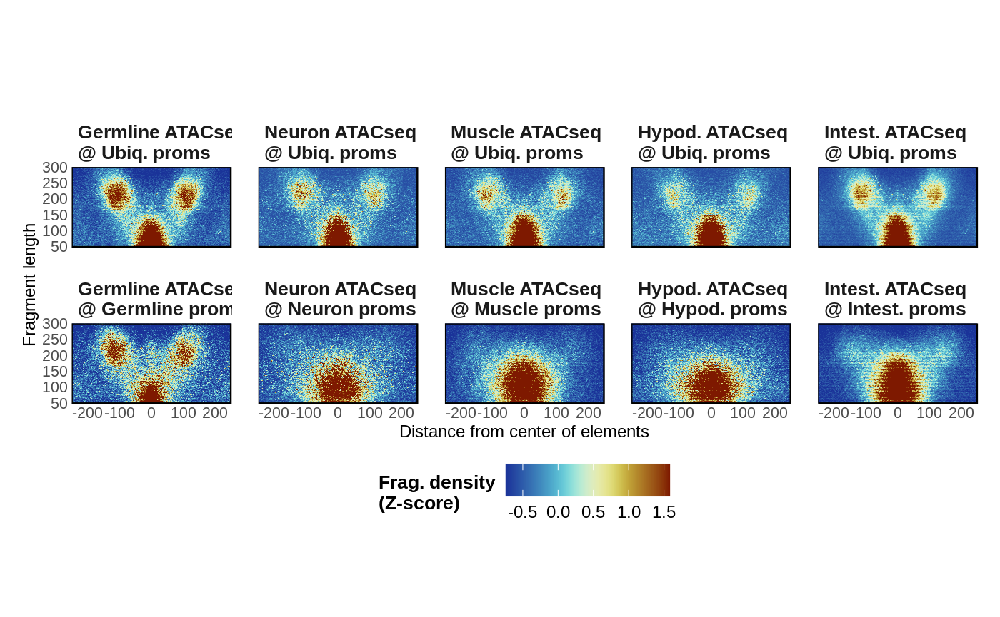
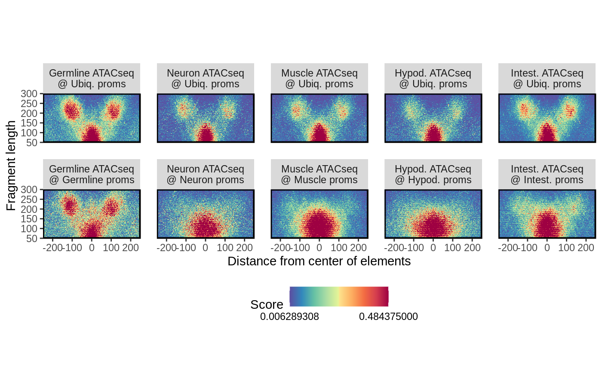
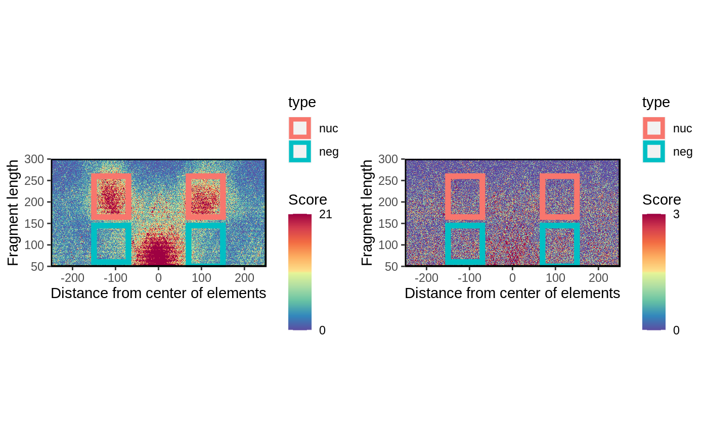
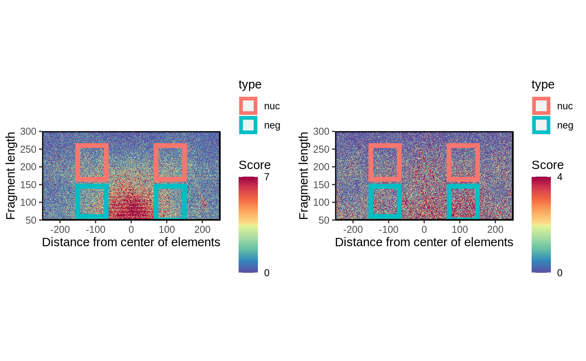

Importing data
Paired-end .bam files are read using the importPEBamFiles() function as follows:
library(VplotR) data(ce11_proms) ce11_proms fragments <- importPEBamFiles( 'ATAC-seq-mapped-fragments.bam', where = ce11_proms, shift_ATAC_fragments = TRUE )
Note: to allow for a accurate background normalization, the where argument should be omitted.
Several datasets are available for this package:
- Sets of tissue-specific ATAC-seq experiments in young adult C. elegans:
data(ce11_proms) ce11_proms #> GRanges object with 17458 ranges and 3 metadata columns: #> seqnames ranges strand | #> <Rle> <IRanges> <Rle> | #> nlp-40,homt-1_chrI_11273_11423 chrI 11273-11423 + | #> nlp-40,homt-1_chrI_11273_11423 chrI 11273-11423 - | #> rcor-1_chrI_26903_27053 chrI 26903-27053 - | #> sesn-1_chrI_36019_36169 chrI 36019-36169 - | #> sesn-1_chrI_42127_42277 chrI 42127-42277 - | #> ... ... ... ... . #> T23E7.2_chrX_17670496_17670646 chrX 17670496-17670646 + | #> T23E7.6_chrX_17684894_17685044 chrX 17684894-17685044 - | #> T23E7.6_chrX_17686030_17686180 chrX 17686030-17686180 - | #> cgt-2_chrX_17694789_17694939 chrX 17694789-17694939 + | #> H11L12.1_chrX_17711839_17711989 chrX 17711839-17711989 - | #> TSS.fwd TSS.rev which.tissues #> <numeric> <numeric> <factor> #> nlp-40,homt-1_chrI_11273_11423 11294 11416 Intest. #> nlp-40,homt-1_chrI_11273_11423 11294 11416 Intest. #> rcor-1_chrI_26903_27053 27038 26901 Ubiq. #> sesn-1_chrI_36019_36169 36112 36028 Intest. #> sesn-1_chrI_42127_42277 42216 42119 Soma #> ... ... ... ... #> T23E7.2_chrX_17670496_17670646 17670678 17670478 Muscle #> T23E7.6_chrX_17684894_17685044 17684919 17684932 Hypod. #> T23E7.6_chrX_17686030_17686180 17686189 17686064 Unclassified #> cgt-2_chrX_17694789_17694939 17694962 17694934 Intest. #> H11L12.1_chrX_17711839_17711989 17711974 17711854 Germline #> ------- #> seqinfo: 6 sequences from an unspecified genome; no seqlengths ATAC_ce11 <- readRDS(url( 'https://ahringerlab.com/VplotR/ATAC_PE_fragments.rds' )) ATAC_ce11 #> $mixed #> GRanges object with 24987916 ranges and 0 metadata columns: #> seqnames ranges strand #> <Rle> <IRanges> <Rle> #> [1] chrI 9461-10168 + #> [2] chrI 9723-10169 + #> [3] chrI 9723-10353 + #> [4] chrI 9723-10266 + #> [5] chrI 9724-9880 + #> ... ... ... ... #> [24987912] chrIV 10254891-10255256 - #> [24987913] chrIV 10254872-10255303 - #> [24987914] chrIV 10254683-10255336 - #> [24987915] chrIV 10254857-10255416 - #> [24987916] chrIV 10254820-10255448 - #> ------- #> seqinfo: 7 sequences from an unspecified genome #> #> $Germline #> GRanges object with 11473757 ranges and 0 metadata columns: #> seqnames ranges strand #> <Rle> <IRanges> <Rle> #> [1] chrI 9767-9863 + #> [2] chrI 9767-9863 + #> [3] chrI 9783-9932 + #> [4] chrI 9791-9858 + #> [5] chrI 9809-9996 + #> ... ... ... ... #> [11473753] chrX 17713403-17713666 - #> [11473754] chrX 17713403-17713666 - #> [11473755] chrX 17713386-17713731 - #> [11473756] chrX 17713364-17713797 - #> [11473757] chrX 17713364-17713797 - #> ------- #> seqinfo: 7 sequences from an unspecified genome #> #> $Neurons #> GRanges object with 24288112 ranges and 0 metadata columns: #> seqnames ranges strand #> <Rle> <IRanges> <Rle> #> [1] chrI 9773-10171 + #> [2] chrI 9780-9873 + #> [3] chrI 9782-9936 + #> [4] chrI 9782-10075 + #> [5] chrI 9782-10075 + #> ... ... ... ... #> [24288108] chrX 17710929-17711148 - #> [24288109] chrX 17710929-17711148 - #> [24288110] chrX 17711000-17711149 - #> [24288111] chrX 17711000-17711149 - #> [24288112] chrX 17710805-17711154 - #> ------- #> seqinfo: 7 sequences from an unspecified genome #> #> $Muscle #> GRanges object with 9928267 ranges and 0 metadata columns: #> seqnames ranges strand #> <Rle> <IRanges> <Rle> #> [1] chrI 9764-9927 + #> [2] chrI 9764-9927 + #> [3] chrI 9773-9867 - #> [4] chrI 9818-9879 - #> [5] chrI 9844-9929 + #> ... ... ... ... #> [9928263] chrX 17711074-17711110 + #> [9928264] chrX 17711083-17711141 + #> [9928265] chrX 17710842-17711133 - #> [9928266] chrX 17710842-17711133 - #> [9928267] chrX 17711101-17711137 - #> ------- #> seqinfo: 7 sequences from an unspecified genome #> #> $Hypod. #> GRanges object with 15527998 ranges and 0 metadata columns: #> seqnames ranges strand #> <Rle> <IRanges> <Rle> #> [1] chrI 9781-10119 + #> [2] chrI 9781-10119 + #> [3] chrI 9781-10119 + #> [4] chrI 9865-9937 + #> [5] chrI 9865-9937 + #> ... ... ... ... #> [15527994] chrX 17711078-17711142 - #> [15527995] chrX 17711093-17711137 - #> [15527996] chrX 17711083-17711156 - #> [15527997] chrX 17711083-17711156 - #> [15527998] chrX 17711083-17711156 - #> ------- #> seqinfo: 7 sequences from an unspecified genome #> #> $Intest. #> GRanges object with 24984513 ranges and 0 metadata columns: #> seqnames ranges strand #> <Rle> <IRanges> <Rle> #> [1] chrI 9391-9858 + #> [2] chrI 9474-9873 + #> [3] chrI 9476-9936 + #> [4] chrI 9476-9936 + #> [5] chrI 9622-9936 + #> ... ... ... ... #> [24984509] chrIII 13768348-13768876 - #> [24984510] chrIII 13768436-13768886 - #> [24984511] chrIII 13768393-13768901 - #> [24984512] chrIII 13768448-13768952 - #> [24984513] chrIII 13768455-13768992 - #> ------- #> seqinfo: 7 sequences from an unspecified genome
- MNase-seq experiment in yeast and REB1 binding sites:
data(REB1_sacCer3) REB1_sacCer3 #> GRanges object with 1264 ranges and 0 metadata columns: #> seqnames ranges strand #> <Rle> <IRanges> <Rle> #> [1] chrI 72794-72802 - #> [2] chrI 118-126 + #> [3] chrI 146-154 + #> [4] chrI 128-136 + #> [5] chrI 87164-87172 - #> ... ... ... ... #> [1260] chrXVI 413129-413137 + #> [1261] chrXVI 942694-942702 - #> [1262] chrXVI 360064-360072 - #> [1263] chrXVI 743555-743563 - #> [1264] chrXVI 627519-627527 + #> ------- #> seqinfo: 16 sequences from an unspecified genome; no seqlengths MNase_sacCer3 <- readRDS(url( 'https://ahringerlab.com/VplotR/MNase_sacCer3_Henikoff2011.rds' )) MNase_sacCer3 #> GRanges object with 108397471 ranges and 0 metadata columns: #> seqnames ranges strand #> <Rle> <IRanges> <Rle> #> [1] chrI 1-172 + #> [2] chrI 1-89 + #> [3] chrI 1-78 + #> [4] chrI 1-167 + #> [5] chrI 1-272 + #> ... ... ... ... #> [108397467] chrXVI 948004-948052 - #> [108397468] chrXVI 947997-948052 - #> [108397469] chrXVI 947991-948052 - #> [108397470] chrXVI 947998-948052 - #> [108397471] chrXVI 947997-948056 - #> ------- #> seqinfo: 17 sequences from an unspecified genome
- ATAC-seq in GM12878 human cells and CTCF binding sites:
Fragment size distribution
A preliminary control to check the distribution of fragment sizes (regardless of their location relative to genomic loci) can be performed using the getFragmentsDistribution() function.
df <- getFragmentsDistribution( MNase_sacCer3, REB1_sacCer3 ) #> Warning in as.cls(x): NAs introduced by coercion #> Warning in as.cls(x): NAs introduced by coercion #> Warning in as.cls(x): NAs introduced by coercion ggplot(df, aes(x = x, y = y)) + geom_line() #> Warning: Removed 2 row(s) containing missing values (geom_path).

Vplot(s)
Once data is imported, a V-plot of paired-end fragments over loci of interest is generated using the plotVmat() function:
plotVmat(MNase_sacCer3, REB1_sacCer3) #> Computing V-mat #> Normalizing the matrix #> Computing raw library depth #> Dividing Vmat by its number of loci #> Smoothing the matrix

The generation of multiple V-plots can be parallelized using a list of parameters:
list_params <- list( "MNase\n@ REB1" = list(MNase_sacCer3, REB1_sacCer3), "MNase\n@ random loci" = list(MNase_sacCer3, sampleGRanges(REB1_sacCer3)) ) p <- plotVmat( list_params, cores = 1 ) #> - Processing sample 1/2 #> Computing raw library depth #> Dividing Vmat by its number of loci #> Smoothing the matrix #> - Processing sample 2/2 #> Computing raw library depth #> Dividing Vmat by its number of loci #> Smoothing the matrix p

# list_params <- list( "Germline ATACseq\n@ Ubiq. proms" = list( ATAC_ce11[['Germline']], ce11_proms[ce11_proms$which.tissues == 'Ubiq.'] ), "Germline ATACseq\n@ Germline proms" = list( ATAC_ce11[['Germline']], ce11_proms[ce11_proms$which.tissues == 'Germline'] ), "Neuron ATACseq\n@ Ubiq. proms" = list( ATAC_ce11[['Neurons']], ce11_proms[ce11_proms$which.tissues == 'Ubiq.'] ), "Neuron ATACseq\n@ Neuron proms" = list( ATAC_ce11[['Neurons']], ce11_proms[ce11_proms$which.tissues == 'Neurons'] ), "Muscle ATACseq\n@ Ubiq. proms" = list( ATAC_ce11[['Muscle']], ce11_proms[ce11_proms$which.tissues == 'Ubiq.'] ), "Muscle ATACseq\n@ Muscle proms" = list( ATAC_ce11[['Muscle']], ce11_proms[ce11_proms$which.tissues == 'Muscle'] ), "Hypod. ATACseq\n@ Ubiq. proms" = list( ATAC_ce11[['Hypod.']], ce11_proms[ce11_proms$which.tissues == 'Ubiq.'] ), "Hypod. ATACseq\n@ Hypod. proms" = list( ATAC_ce11[['Hypod.']], ce11_proms[ce11_proms$which.tissues == 'Hypod.'] ), "Intest. ATACseq\n@ Ubiq. proms" = list( ATAC_ce11[['Intest.']], ce11_proms[ce11_proms$which.tissues == 'Ubiq.'] ), "Intest. ATACseq\n@ Intest. proms" = list( ATAC_ce11[['Intest.']], ce11_proms[ce11_proms$which.tissues == 'Intest.'] ) ) p <- plotVmat( list_params, cores = 1, nrow = 2, ncol = 5, verbose = FALSE ) #> Computing raw library depth #> Dividing Vmat by its number of loci #> Smoothing the matrix #> Computing raw library depth #> Dividing Vmat by its number of loci #> Smoothing the matrix #> Computing raw library depth #> Dividing Vmat by its number of loci #> Smoothing the matrix #> Computing raw library depth #> Dividing Vmat by its number of loci #> Smoothing the matrix #> Computing raw library depth #> Dividing Vmat by its number of loci #> Smoothing the matrix #> Computing raw library depth #> Dividing Vmat by its number of loci #> Smoothing the matrix #> Computing raw library depth #> Dividing Vmat by its number of loci #> Smoothing the matrix #> Computing raw library depth #> Dividing Vmat by its number of loci #> Smoothing the matrix #> Computing raw library depth #> Dividing Vmat by its number of loci #> Smoothing the matrix #> Computing raw library depth #> Dividing Vmat by its number of loci #> Smoothing the matrix p

Vplots normalization
Different normalization approaches are available:
# No normalization p <- plotVmat( list_params, cores = 1, nrow = 2, ncol = 5, verbose = FALSE, normFun = '' ) #> No normalization applied #> Smoothing the matrix #> No normalization applied #> Smoothing the matrix #> No normalization applied #> Smoothing the matrix #> No normalization applied #> Smoothing the matrix #> No normalization applied #> Smoothing the matrix #> No normalization applied #> Smoothing the matrix #> No normalization applied #> Smoothing the matrix #> No normalization applied #> Smoothing the matrix #> No normalization applied #> Smoothing the matrix #> No normalization applied #> Smoothing the matrix p

# Library depth + number of loci of interest (default) p <- plotVmat( list_params, cores = 1, nrow = 2, ncol = 5, verbose = FALSE, normFun = 'libdepth+nloci' ) #> Computing raw library depth #> Dividing Vmat by its number of loci #> Smoothing the matrix #> Computing raw library depth #> Dividing Vmat by its number of loci #> Smoothing the matrix #> Computing raw library depth #> Dividing Vmat by its number of loci #> Smoothing the matrix #> Computing raw library depth #> Dividing Vmat by its number of loci #> Smoothing the matrix #> Computing raw library depth #> Dividing Vmat by its number of loci #> Smoothing the matrix #> Computing raw library depth #> Dividing Vmat by its number of loci #> Smoothing the matrix #> Computing raw library depth #> Dividing Vmat by its number of loci #> Smoothing the matrix #> Computing raw library depth #> Dividing Vmat by its number of loci #> Smoothing the matrix #> Computing raw library depth #> Dividing Vmat by its number of loci #> Smoothing the matrix #> Computing raw library depth #> Dividing Vmat by its number of loci #> Smoothing the matrix p

# Zscore p <- plotVmat( list_params, cores = 1, nrow = 2, ncol = 5, verbose = FALSE, normFun = 'zscore' ) #> Smoothing the matrix #> Smoothing the matrix #> Smoothing the matrix #> Smoothing the matrix #> Smoothing the matrix #> Smoothing the matrix #> Smoothing the matrix #> Smoothing the matrix #> Smoothing the matrix #> Smoothing the matrix p

# Quantiles p <- plotVmat( list_params, cores = 1, nrow = 2, ncol = 5, verbose = FALSE, normFun = 'quantile', s = 0.99 ) #> Smoothing the matrix #> Smoothing the matrix #> Smoothing the matrix #> Smoothing the matrix #> Smoothing the matrix #> Smoothing the matrix #> Smoothing the matrix #> Smoothing the matrix #> Smoothing the matrix #> Smoothing the matrix p

Footprints
VplotR also implements a function to profile the footprint from MNase or ATAC-seq over sets of genomic loci. For instance, CTCF is known for its ~40-bp large footprint at its binding loci.
plotFootprint( ATAC_hg38, CTCF_hg38 )

Nucleosome enrichment quantification
Finally, the nucleosomeEnrichment() function is useful to quantify and compare enrichment of flanking nucleosomes at promoters in ATAC-seq datasets.
germline_proms <- ce11_proms[ce11_proms$which.tissues == "Germline"] muscle_proms <- ce11_proms[ce11_proms$which.tissues == "Muscle"] # nuc_enrich_germline <- nucleosomeEnrichment( ATAC_ce11[['mixed']], germline_proms ) #> Computing Vmat... #> No normalization applied #> Computing background... #> No normalization applied #> Computing enrichment... nuc_enrich_germline$fisher_test #> #> Fisher's Exact Test for Count Data #> #> data: matrix(vec, ncol = 2) #> p-value < 2.2e-16 #> alternative hypothesis: true odds ratio is not equal to 1 #> 95 percent confidence interval: #> 3.883553 4.096637 #> sample estimates: #> odds ratio #> 3.988432 nuc_enrich_germline$plot

nuc_enrich_muscle <- nucleosomeEnrichment( ATAC_ce11[['mixed']], muscle_proms ) #> Computing Vmat... #> No normalization applied #> Computing background... #> No normalization applied #> Computing enrichment... nuc_enrich_muscle$fisher_test #> #> Fisher's Exact Test for Count Data #> #> data: matrix(vec, ncol = 2) #> p-value < 2.2e-16 #> alternative hypothesis: true odds ratio is not equal to 1 #> 95 percent confidence interval: #> 1.451124 1.524628 #> sample estimates: #> odds ratio #> 1.487388 nuc_enrich_muscle$plot

Session Info
sessionInfo() #> R version 3.5.2 (2018-12-20) #> Platform: x86_64-pc-linux-gnu (64-bit) #> Running under: Ubuntu 18.04.2 LTS #> #> Matrix products: default #> BLAS: /usr/lib/x86_64-linux-gnu/blas/libblas.so.3.7.1 #> LAPACK: /usr/lib/x86_64-linux-gnu/lapack/liblapack.so.3.7.1 #> #> locale: #> [1] LC_CTYPE=en_GB.UTF-8 LC_NUMERIC=C #> [3] LC_TIME=en_GB.UTF-8 LC_COLLATE=en_GB.UTF-8 #> [5] LC_MONETARY=en_GB.UTF-8 LC_MESSAGES=en_GB.UTF-8 #> [7] LC_PAPER=en_GB.UTF-8 LC_NAME=C #> [9] LC_ADDRESS=C LC_TELEPHONE=C #> [11] LC_MEASUREMENT=en_GB.UTF-8 LC_IDENTIFICATION=C #> #> attached base packages: #> [1] parallel stats4 stats graphics grDevices utils datasets #> [8] methods base #> #> other attached packages: #> [1] VplotR_0.4.2 magrittr_1.5 ggplot2_3.3.0 #> [4] GenomicRanges_1.34.0 GenomeInfoDb_1.18.2 IRanges_2.16.0 #> [7] S4Vectors_0.20.1 BiocGenerics_0.28.0 #> #> loaded via a namespace (and not attached): #> [1] SummarizedExperiment_1.12.0 zoo_1.8-5 #> [3] tidyselect_0.2.5 xfun_0.5 #> [5] purrr_0.3.4 reshape2_1.4.3 #> [7] lattice_0.20-38 colorspace_1.4-1 #> [9] htmltools_0.3.6 yaml_2.2.0 #> [11] rlang_0.4.6 pkgdown_1.5.1 #> [13] pillar_1.3.1 glue_1.4.0 #> [15] withr_2.2.0 BiocParallel_1.16.6 #> [17] RColorBrewer_1.1-2 plyr_1.8.4 #> [19] matrixStats_0.54.0 GenomeInfoDbData_1.2.0 #> [21] stringr_1.4.0 zlibbioc_1.28.0 #> [23] Biostrings_2.50.2 munsell_0.5.0 #> [25] gtable_0.3.0 memoise_1.1.0 #> [27] evaluate_0.13 labeling_0.3 #> [29] Biobase_2.42.0 knitr_1.22 #> [31] Rcpp_1.0.1 scales_1.0.0 #> [33] backports_1.1.3 DelayedArray_0.8.0 #> [35] desc_1.2.0 XVector_0.22.0 #> [37] fs_1.3.1 Rsamtools_1.34.1 #> [39] digest_0.6.18 stringi_1.3.1 #> [41] dplyr_0.8.0.1 cowplot_0.9.4 #> [43] grid_3.5.2 rprojroot_1.3-2 #> [45] tools_3.5.2 bitops_1.0-6 #> [47] RCurl_1.95-4.12 tibble_2.1.1 #> [49] crayon_1.3.4 pkgconfig_2.0.2 #> [51] MASS_7.3-51.1 Matrix_1.2-17 #> [53] assertthat_0.2.1 rmarkdown_1.12.6 #> [55] R6_2.4.0 GenomicAlignments_1.18.1 #> [57] compiler_3.5.2